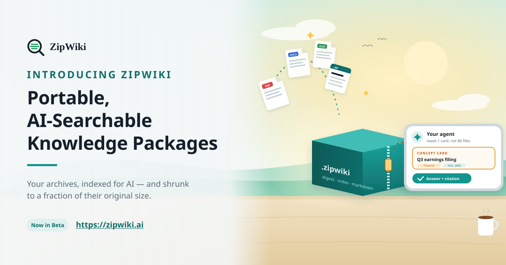

To an AI agent, a ZIP file is a blind box. It can see the filenames—and almost nothing else. To answer a question, the archive has to be unpacked and the agent has to chew through massive, heavy files from scratch every single time.
Every team accumulates folders of PDFs, Word documents, spreadsheets, and slide decks—session laws, quarterly earnings filings, clinical records, contracts, or reference books—and we traditionally pack them into ZIP files to save space. That works for humans. It fails for AI.
ZipWiki solves this problem. It is portable document memory with an embedded AI index—not another cloud drive, and not a complex database you have to maintain. When you pack a folder into a .zipwiki file, ZipWiki reads your documents once, pulls out the clean text, and writes a smart index right inside the ZIP container.
A .zipwiki is still a standard ZIP file that opens with normal unzipping tools on any computer, but organized specifically for AI:
Asking an AI a question about a massive archive shouldn’t require loading the entire collection into memory at once.
ZipWiki is built for selective reading. When an AI interacts with a ZipWiki package, it follows a simple path:
Because ZipWiki captures the text, tables, and headings an AI actually uses, bulky original files don’t always need to travel with the archive.
Linking out to original files (such as state law portals or SEC databases) instead of packing them directly inside routinely shrinks an archive’s size by upwards of 99%. That translates to roughly 1/100th of the original file size, while each answer still cites the concept card, the section it used, and the source link. When that original is fetched from the source link, ZipWiki can verify it against the recorded CRC-32. When full offline access is required, the original binaries can simply remain bundled inside.
ZipWiki puts data back in your hands. There is no hosted index or vector store needed. You can share, sync, email, and back up .zipwiki archives like any standard ZIP file, confident that your knowledge remains instantly accessible to both humans and AI models.
Built by NeoWare, the team behind NeoZip. ZipWiki is now available in Beta. To explore the format, download the tools, and start packaging your archives, visit zipwiki.ai.